Diffusion Models: From Noise to Images
Sammie Smith, Fall 2025
Implementation: This project uses the DeepFloyd IF diffusion model, a two-stage model by Stability AI. Stage 1 generates 64×64 images, and Stage 2 upsamples to 256×256. The model works by converting text prompts into high-dimensional embeddings (4096 dimensions) that guide the image generation process.
Here are three prompts:
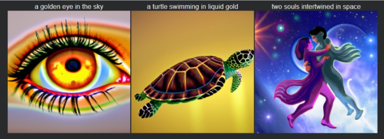
Results using 20 inference steps
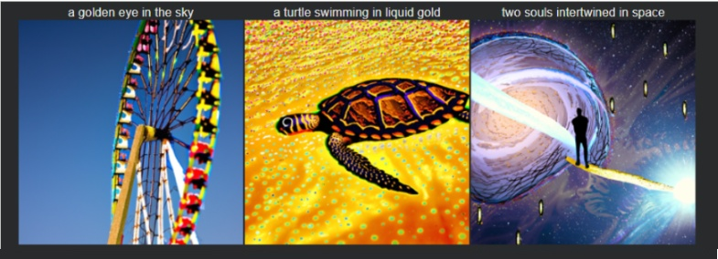
Results using 100 inference steps
Observations: A larger number of inference steps is supposed to yield better quality. This is not necessarily the case here; it depends on how you define quality. With more steps, the model seems to lose sight of the original prompt: an eye becomes a Ferris wheel with vein-like spokes and two souls become one. More steps, does however, lead to much more detailed images.
How it works: The forward process adds Gaussian noise to a clean image according to a noise schedule. The alpha_t values come from the pre-defined noise schedule, which specifies how much signal is preserved at each forward diffusion timestep. The culmulative product of the alpha_ts represents the remaining fraction of the original image after repeadedly applying small gaussian noise steps.
This allows me to sample a noisy version of an image at any timestep t. I test this on the Campanile image at different noise levels (t = 250, 500, 750).
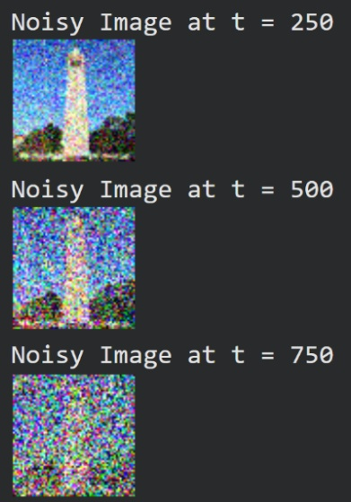
Original Image
How it works: This section attempts to denoise the noisy images using classical Gaussian blur filtering. This method simply applies a Gaussian blur to smooth out noise. Unsurprisingly, this method struggles significantly with heavily noised images and cannot recover meaningful details.
Also, a larger kernel results in a stronger blur, which results in poor denoising (see results for kernel 7). Similarly, too small of a kernel results in poor denoising because too much noise is left over (see kernel size 3)
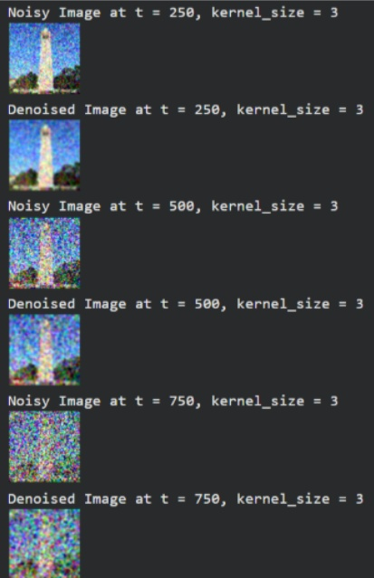
Noisy and Denoised Images at (t=250, 500, 75) with kernel of size 3
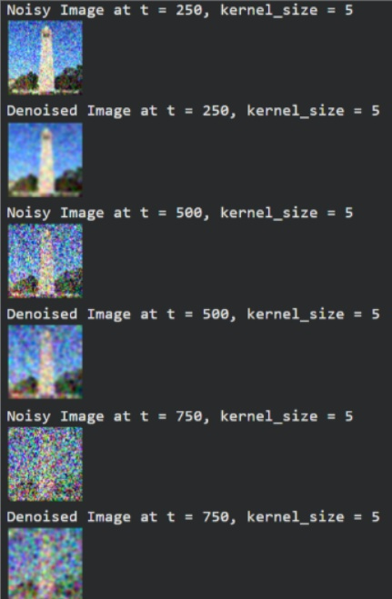
Noisy and Denoised Images at (t=250, 500, 75) with kernel of size 5
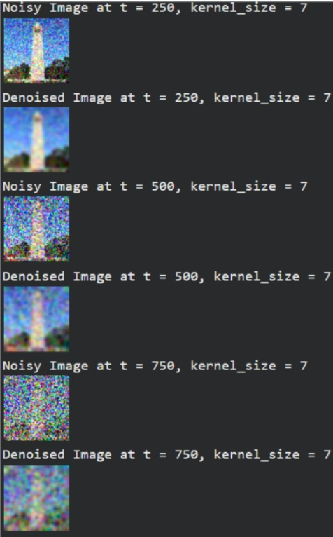
Noisy and Denoised Images at (t=250, 500, 75) with kernel of size 7
How it works: The pretrained UNet denoiser estimates the noise added to the image and removes it in a single step. The UNet was trained on millions of (x0, xt) pairs and learns to predict noise conditioned on the timestep t.
This works much better than Gaussian blur, especially at lower noise levels, because it projects images back onto the natural image manifold. Gaussian denoising just blurs the noise, with no gaurrantee of ensuring the image is in the natural image manifold
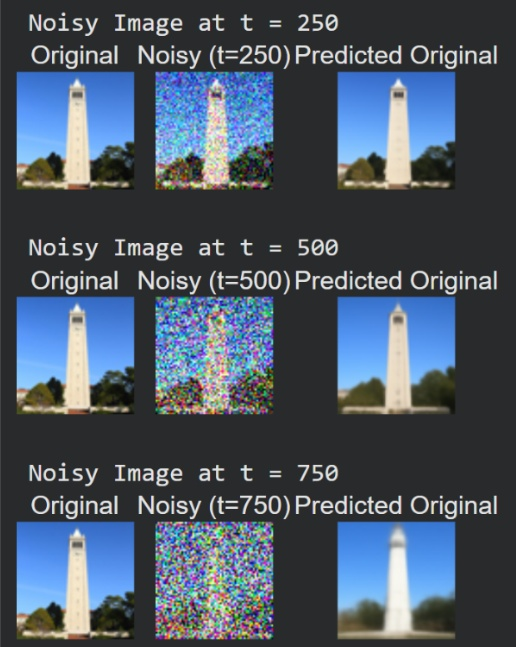
Noisy images vs One Step Denoised images at t=250,500,700
How it works: Instead of denoising in one giant step, iterative denoising removes noise gradually over multiple steps. Starting from a noisy image at timestep t, I:
I use strided timesteps (990, 960, 930... 30, 0) with steps of 30 for efficiency. This iterative approach produces significantly better results than one-step denoising.
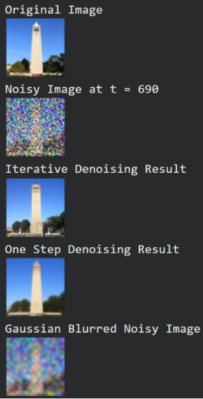
Evolution of the image through the denoising process:
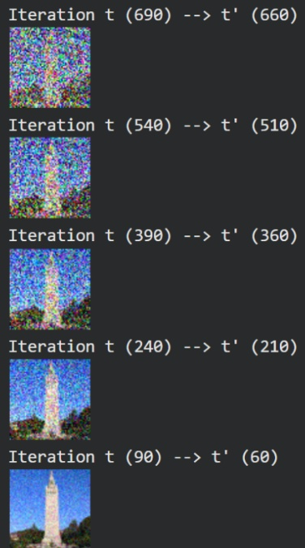
Campanile at every 5th denoising step
How it works: I generate entirely new images from scratch by starting with pure random noise (from a Gaussian distribution) and iteratively denoising it using the prompt "a high quality photo". This effectively "forces" random noise onto the manifold of natural images through the denoising process.
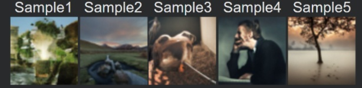
This was super cool! You can kinda see a couple of landscapes with some mountains, trees, and bodies of water. One sample also displays a man thinking. Pretty creepy & surreal... doesn't seem like it's fully on the natural manifold.
How it works: CFG greatly improves image quality by computing both a conditional noise estimate (with prompt) and unconditional estimate (empty prompt).
The formula is a weighted sum of the conditional noise estimate and difference between conditional noise estimate and unconditional noise estimate scaled by some gamma. Gamma is the guidance scale (typically 7). This amplifies the effect of the text conditioning, producing images that are more aligned with the prompt and of higher quality, though with reduced diversity.
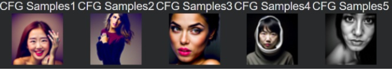
Prompt: "a high quality photo"
The problem spec said that using CFG comes at a cost of reduced image diversity. We can see that here: all images are of humans.They are more realistic and less surreal. They are much more detailed.
How it works: By adding noise to a real image and then denoising it, I edit existing images. The amount of noise controls the degree of editing: more noise allows for more creative changes. The model projects the noisy image back onto the natural image manifold, necessarily hallucinating or creating new content in the process.
Campanile, Using prompt: "a high quality photo"
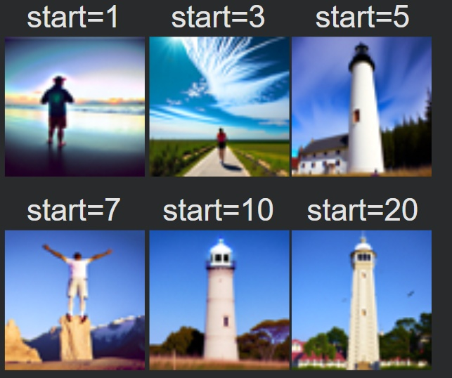
Noise Levels = [1,3,5,7,10,20]
Surfer at sunset, Using prompt: "a high quality photo"
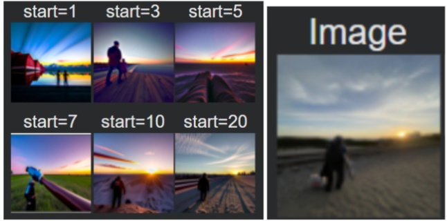
Noise Levels = [1,3,5,7,10,20]
Kim Jong [Dad] (see context in inpainting section lol), Using prompt: "a high quality photo"
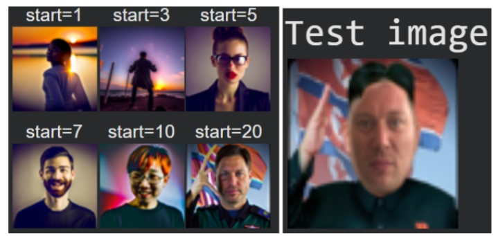
Noise Levels = [1,3,5,7,10,20]
Projecting non-realistic images onto the natural image manifold:
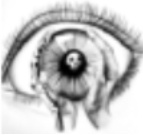
Input Image
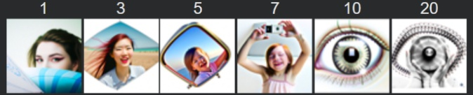
Generated Output
Hand-drawn Input
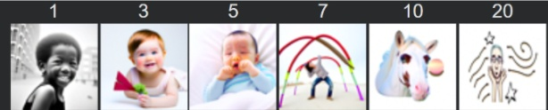
Generated Output
You can see how iteration 7 picks up on the curved lines in my drawing, and how iteration 10 has a ball by the horse's head that becomes the star.
Hand-drawn Input
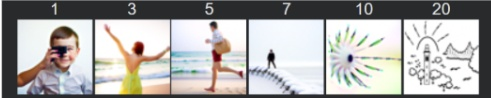
Generated Output
You can see how by iteration 3, there is some notion of ocean. In iteration 7 and 10, you can see radial straitions appear in the swans' heads and the flower petal that eventually become the sun's rays.
How it works: Following the RePaint paper, I fill in masked regions of an image. At each denoising step, I force the unmasked pixels to match the original image while letting the masked region be generated freely.
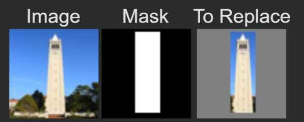
Mask
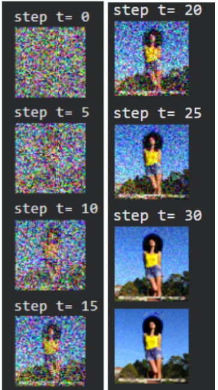
Inpainted Results
… the Campanile is now a woman
Here are the results on a couple of my own images!
My Dad and I have a running joke where he sarcastically compares himself to the dictator of North Korea when he 'so cruelly' reminds me to unload the dishwasher. He made this meme of himself that I will exploit.
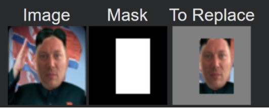
Mask
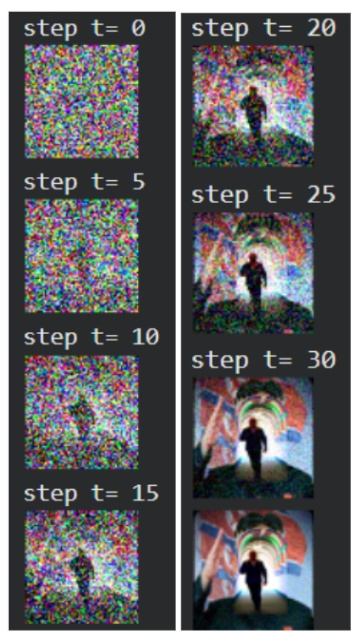
Inpainted Results
I love this result, very surreal! It gives big brother 1984 vibes.
In this image of a surfer at sunset, I mask out the sky.
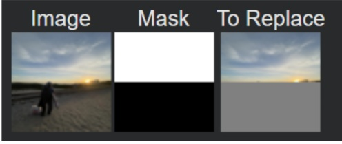
Mask
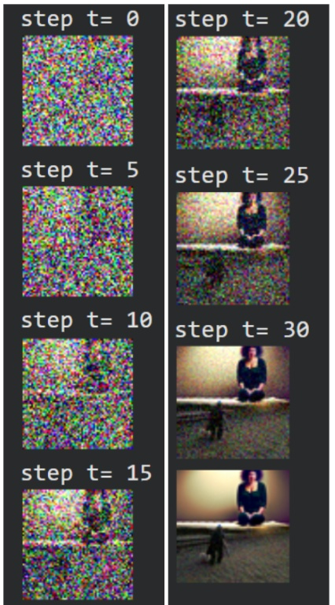
Inpainted Results
It's very bizarre. With out any prompt, the model fills in the sky with an image of a woman mediating.
I had a lot more fun with this section. It was silly to find things to fill in. Across the board, results seem to devolve at scale=20, interestingly. "
Here's the Campanile filled in with "a sun palace in the clouds". Scale=1 and Scale=7 are my favorite results.
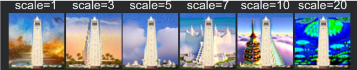
Here's Kim Jong Dad's face filled in with "a sad drooling infant head". The result for scale=5 is a personal favorite, with scale=3 coming in as a close second.
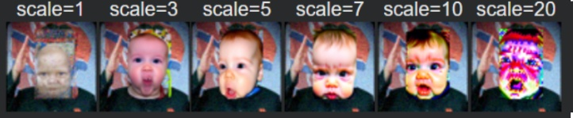
Here's the surfer's sunset view filled in with "a turtle swimming in liquid gold". I like scale=5 the best.
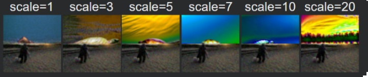
How it works: I create optical illusions where an image appears as one thing normally, but reveals something completely different when flipped upside down. The algorithm:
This forces the model to satisfy both prompts simultaneously through different orientations.
"A sad boy" vs "A happy boy", scale = 3. You can see a smiling mustachioed man vs a screaming little boy
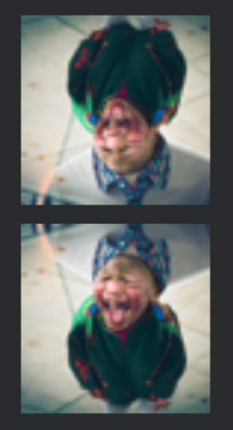
"A sad boy" vs "A sad girl", scale=5. I got really lucky and got this good of a result on the first try!
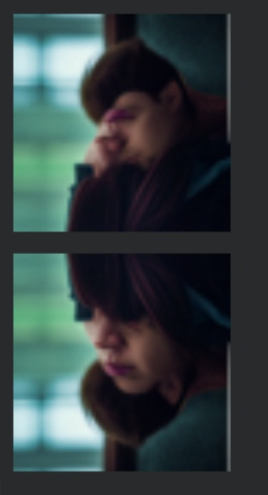
How it works: Similar to Project 2, I create hybrid images but this time using diffusion models. I estimate noise with two different prompts, then combine low frequencies from the first noise estimate with high frequencies from the second
This creates an image that appears as one thing up close (high frequencies) and another when viewed from far away (low frequencies).
Prompt 1 (low freq): "a frog" | Prompt 2 (high freq): "a cat"
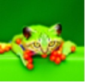
Hybrid Result
I got better results using sigma=1, This made the low frequencies stand out more to make the frog more visible.
Prompt 1 (low freq): "cats" | Prompt 2 (high freq): "water color flowers"
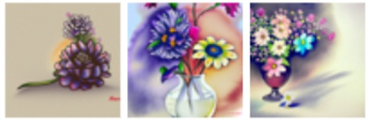
Hybrid Result
I had a lot of fun with this one, here are a few different versions!